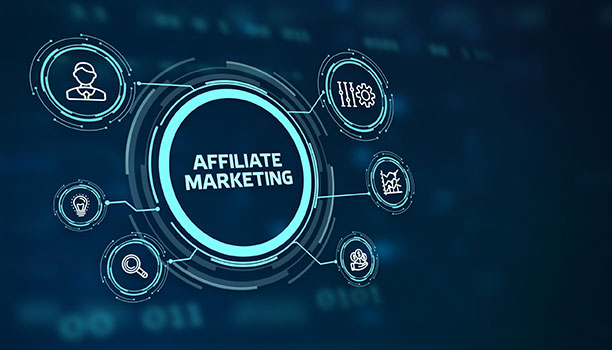
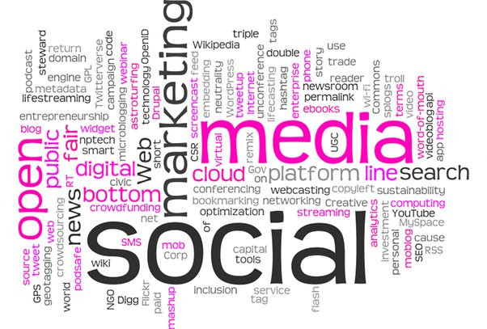
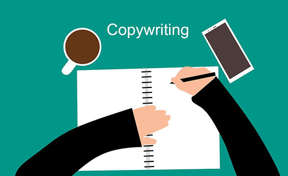

The easiest and fairly promised way of working, with no age limitations; Making money online. Making money online being the new rush we bring to you five methods you could explore and start on right now!
Drop-shipping is the practice of someone or a business selling products that they do not maintain in stock on their website. Instead, when a store sells a product, it purchases the item from a third party and has it shipped directly to the customer. You never have to see the product or handle it. There are some intrinsic risks in the dropshipping business, including shaky product quality and sluggish shipping times. The vast majority of the products that dropshippers buy to offer to Western consumers are made in either China or India.
Advantages
Less investment is needed :Undoubtedly, the
greatest benefit to drop-shipping is that it is possible to start a web based commerce store without investing a large number of dollars in stock in
advance.
Positive cash flow: Directly paid by the customer.
Flexibility in location: It's online and can be done from anywhere in the world.
Prodcut variety: You could pick any product to dropship.
Low risk.
Disadvantages
High prices: Some items maybe very costly.
High competition: There are many people in the industry currently dropshipping.
Overall, dropshipping can be a viable option for entrepreneurs looking to start an online business with minimal upfront costs and inventory. However, it is important to carefully research suppliers and products, as well as to plan for potential challenges such as shipping times and quality control.
Best for: Students, stay-at-home parents, people who work from home, people who are starting a company or a side gig, and Ecommerce experts.
2. Affiliate Marketing

In affiliate marketing, a product or service is promoted by being shared on a blog, social media site, podcast, or website.In an affiliate marketing plan, partners are paid for any sales generated by the affiliate's promotional efforts. Affiliate marketing is now a billion-dollar business thanks to cookies, analytics, and digital marketing. Affiliates are usually paid per sale by businesses, and less frequently by clicks or impressions.
It's targeted marketing, affiliates often have a specific niche ro audience they cater to, therefore specific audiences.
Advantages
Having access to a larger population : More sales can be made.
advance.
Improved tracking of qualified prospects: Products are less prone to get lost as you are not directly handling them.
Flexibility in location: It's online and can be done from anywhere in the world.
Inexpensive ads: You could promote products on your social media platform.
Disadvantages
Less creative control: You would have to do what your affiliate contract requires
Overall, affiliate marketing can be a highly effective way for businesses to expand their reach and generate sales, while also providing an opportunity for affiliates to earn passive income through their own marketing efforts. It is important to carefully choose affiliates and establish clear guidelines and expectations to ensure a successful affiliate program.
Best for: Students, stay-at-home parents, people who work from home and social media influencers.
3. Remote Closing
Remote closing, also referred to as "high ticket" and "inbound" closing, is a comparatively new sales method in which people collaborate with online businesses directly to promote their high-ticket products in exchange for a commission. The remote closer's role is to personally pitch the offer to prospective customers whose contact information has been provided by the company owner. Therefore, it follows that remote closers are in charge of responding to queries, resolving objections, and finally convincing prospects to make a purchase. Additionally, the remote closer receives a percentage commission on all transactions.
Advantages
High revenue: High-ticket products have usually has a high profit margin.
You do not need to create or own a product yourself.
Might not need a WiFi connection at times.
Very convinient
Disadvantages
Calls might take a long time
It can be very dissapointing when customers do not wish to buy your product after a very long call.
You need to know EVERYTHING about the product you promote.
In general, remote closing can offer a useful and quick way to finish transactions, especially in circumstances where in-person meetings are impractical or impossible. To ensure that remote closing is done safely and complies with all requirements, it is crucial to carefully consider the legal and technical aspects.
Best for: Students, stay-at-home parents, people who work from home and social media influencers.
4.SMMA

Simply put, an SMMA, or social media marketing agency, is a particular kind of company that concentrates on using social media channels to effectively promote its clients' businesses. This takes the form of paid advertising (buying and managing ads on social media channels), social media management (posting and engaging on social media on behalf of clients), and any additional services that may be offered to increase the effectiveness of the aforementioned efforts, such as funnel building, content creation, email marketing, and more.
Advantages
Less technically challenging
Relatively low to no cost (compared to other digital marketing strategies).
Complements off-page SEO efforts.
Ability to trigger social sharing and virality,
Revenue differs on services provided
Disadvantages
Tight competition
Easy to Start – Difficult to Master.
Control handed over to consumers.
Overall, for those with expertise in social media marketing and online advertising, SMMA can be a successful business strategy. To guarantee long-term success, it's critical to provide high-quality services, set yourself apart from rivals, and cultivate solid client relationships.
Best for: Students, stay-at-home parents, people who work from home and social media influencers.
5.Copywriting

The copywriter will compose and edit content as a member of the creative team for a range of projects (including print, web, mobile, video, and social media), collaborating closely with the account and design teams to generate concepts, refine messaging, and develop ideas.
Advantages
Variety of work: You will get to write about differnt topics.
Flexibility: Can be done at night as long as work is submmited on time.
Low skill level needed: You don't need a degree to start.
Disadvantages
Can be time consuming :You need to research about every topic you write about
Creative limitations: You need to write what your employer requires.
All things considered, copywriting is an essential talent for marketers, advertisers, and anyone else who needs to persuade an audience. A thorough grasp of the target audience, persuasive language, adherence to the brand voice, careful structuring and formatting, and ongoing testing and optimization are necessary for effective copywriting.
Best for: Students, stay-at-home parents, people who work from and individuals fluent in main lanuages.
Making money online is not as simple as it may seem, so having an expert in the field show you the ropes can be helpful. They can give you recommendations for jobs and impart their expertise to you. to explain the mistakes they made to you so you can prevent making them. At Webinaire, we offer a hand-picked group of Mentors who we think will help you the most and advance you to the highest ranks, naturally increasing your pay.